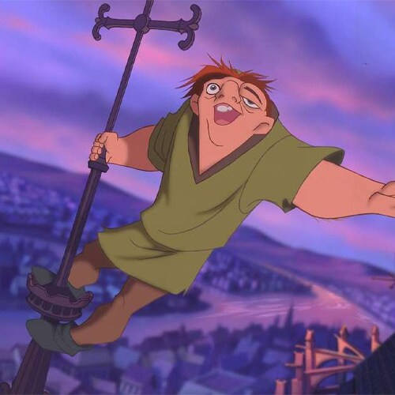
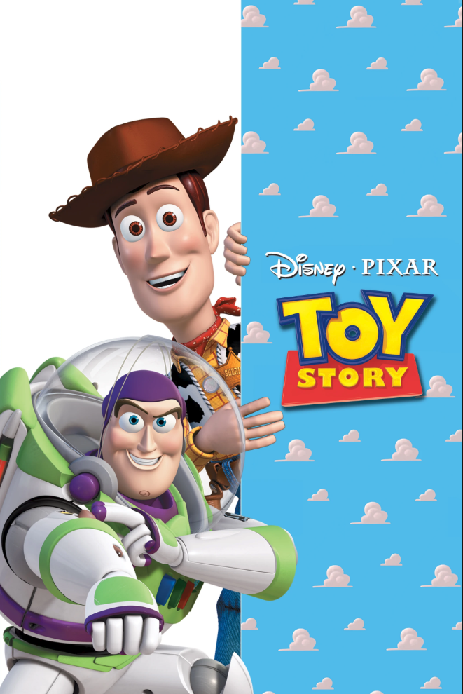
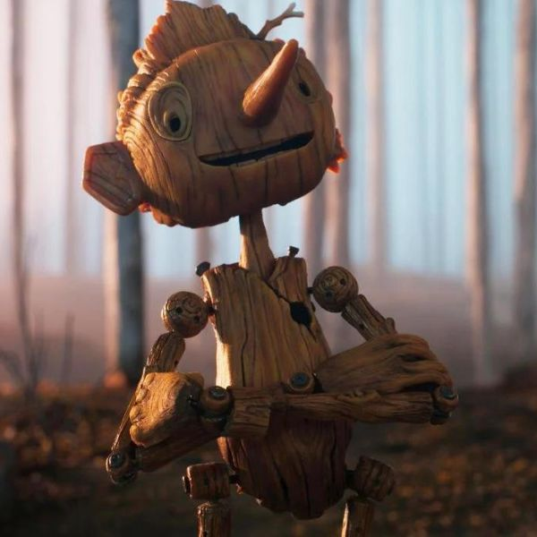
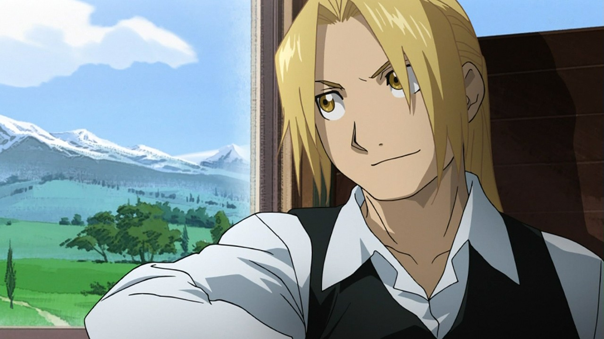
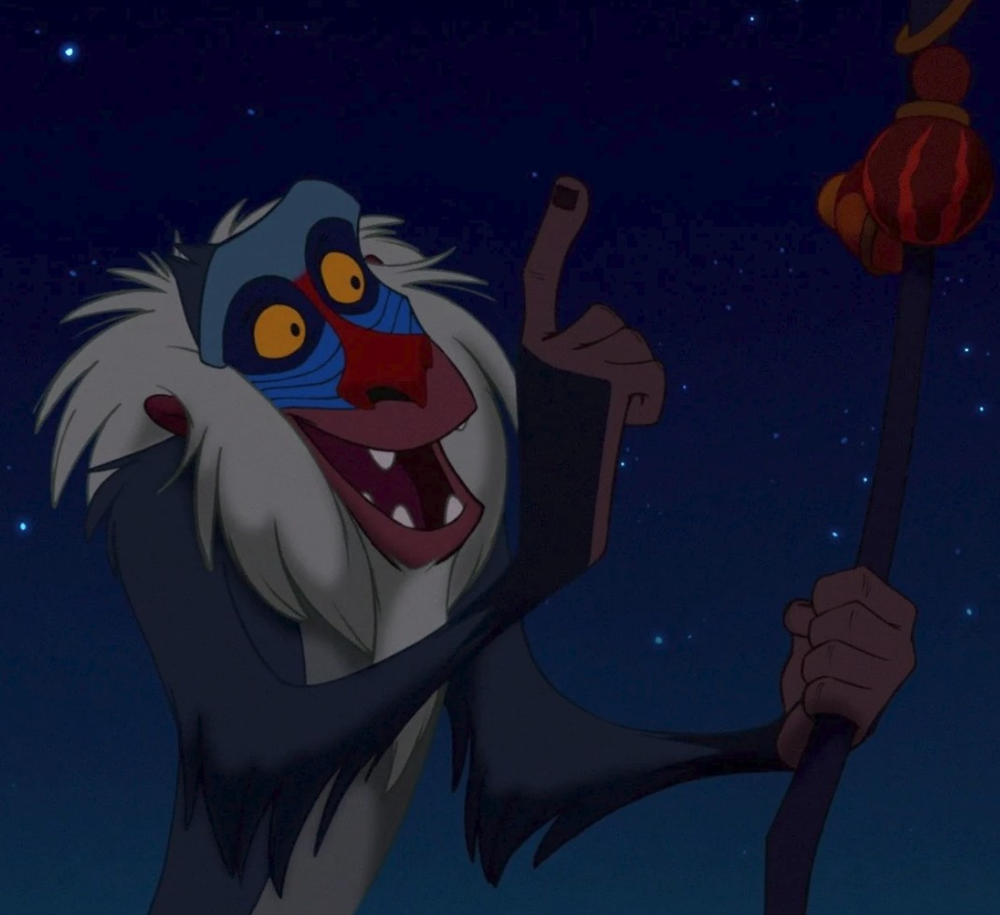
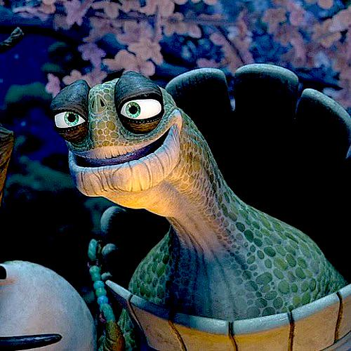
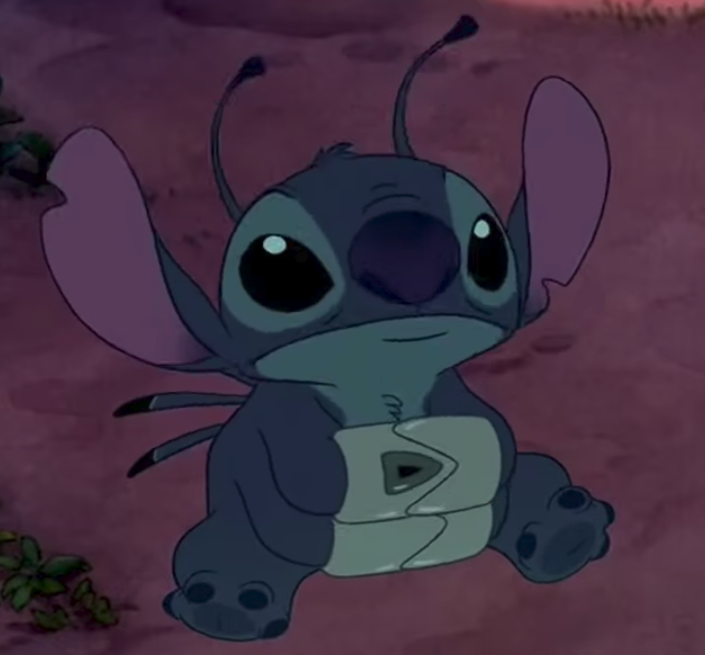
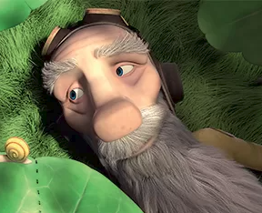
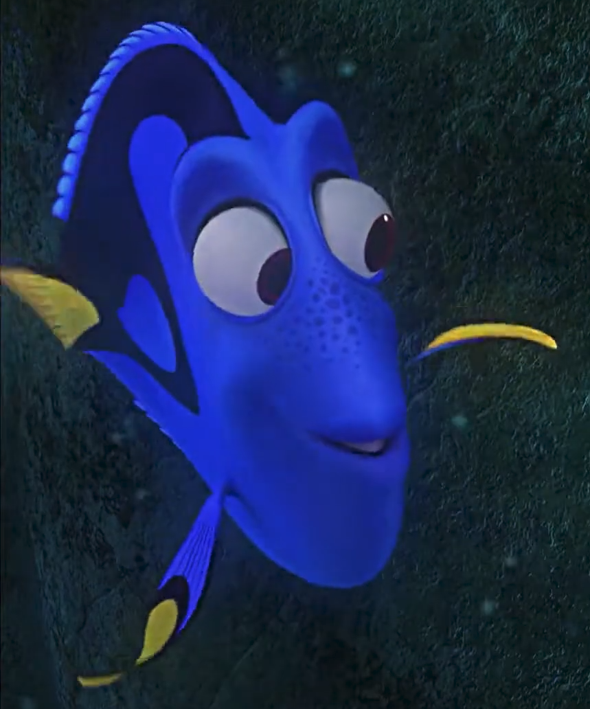

Explore um imenso catálogo, avalie seus desenhos favoritos e veja as recomendações do momento!
É a arte de criar a ilusão de movimento exibindo rapidamente uma sequência de imagens estáticas.
Quanto mais imagens por segundo, mais fluida será a animação.
Selecione uma taxa de quadros por segundo e observe a diferença entre elas:

Inclui técnicas com desenhos e gráficos bidimensionais, sem profundidade, produzidos quadro a quadro ou por animação vetorial.

Usa técnicas que criam e movimentam objetos e personagens em um ambiente digital tridimensional, dando sensação de profundidade e realismo.

Feito com objetos reais fotografados quadro a quadro, com leves ajustes entre as imagens, gerando a ilusão de movimento quando exibidas em sequência.

Estilo de animação originário do Japão que costuma ter uma estética única, com personagens de olhos grandes, expressões exageradas e histórias complexas.
Mais do que entretenimento, as animações nos ensinam lições que podemos levar para a vida, ensinando valores, perspectivas diferentes e habilidades socioemocionais
“Aprender uma lição sem dor não tem significado. Isso porque as pessoas não conseguem obter nada sem sacrificar alguma coisa. Mas, quando elas superam as dificulades e conseguem o que querem, as pessoas conquistam um coração forte que não perde para nada.”
- Edward Elric, Fullmetal Alchemist Brotherhood

"O passado pode doer, mas do jeito que eu vejo, você pode fugir dele ou aprender com ele"
- Rafiki, O Rei Leão

“O ontem é história, o amanhã é um mistério, mas o hoje é uma dádiva. É por isso que se chama presente”
- Oogway, Kung Fu Panda

“Ohana quer dizer família. Família quer dizer nunca mais abandonar ou esquecer”
- Stitch, Stitch

“O problema não é crescer, é esquercer”
- Aviador, O Pequeno Príncipe

“Quando a vida decepciona, qual é a solução? Continue a nadar! [...] Para achar a solução!
- Dori, Procurando Nemo

Descubra as melhores animações para assistir e se emocionar!
Sou uma pessoa apaixonada por animações e programação. A junção desses dois mundos deu origem a este projeto!
Feito com o intuito de compartilhar minha paixão pelos desenhos animados e desenvolver minhas habilidades como desenvolvedor, este site traz algumas recomendações pessoais de animações e conecta o Frontend, o Backend e o banco de dados para dar vida ao projeto.